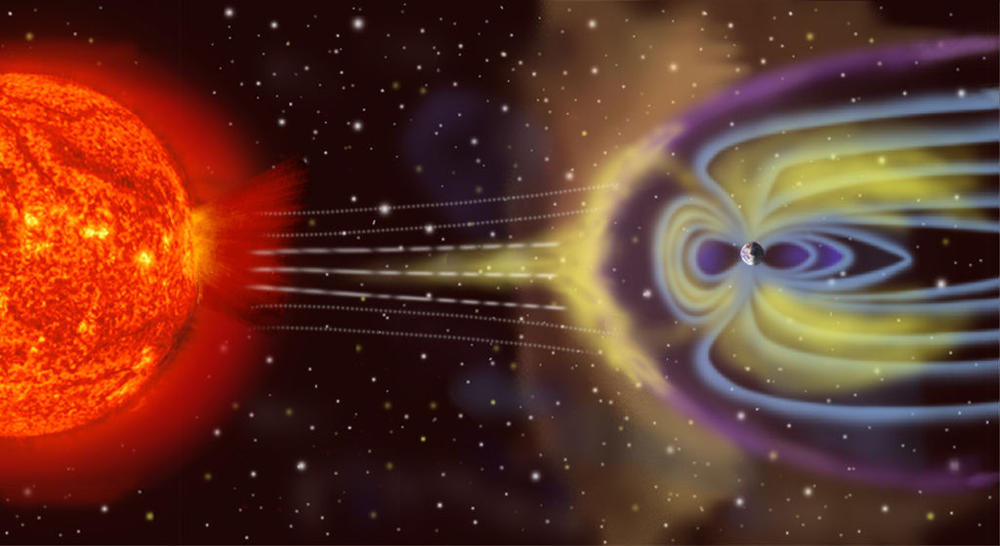

The 1859 Carrington Event: A Big Sparky Solar Rave!

An angry sun...

Can lead to a very farty sun
Coronal Mass Ejections Mixed with Pre-Internet Earth = big ole solar rave
Some times our fractious lil ball of fire likes to get into a bit of a mood.
Whilst the downsides of our big firey daddy's moods may lead to the collapse of telecomunication networks and society as we know it. At least we'll get one almighty space rave in the sky!
Here's how to make a modern day geomagnetic storm. Carrington style.
Ingredients:
- A Moody Sun
- Plenty of plasma plucked straight from the suns blackened holes.
- A tiny lil blue-marble hurtling through the cosmos.
- A population of unsuspecting, upright, hominids that have a fascination with pretty lights and big pointy sticks.
Recipe Instructions:
- You gotta do the twist with the sun's magnetic field, till it's all in a tizzy and looking all Watson and Crick.
- The sun's gonna get real mad and really constipated like. Eventually, the pressure becomes too much and the sun let's off a big ole stinky of plasma.
- That plasma is hecka magnetized and made up of all sorts of jittery protons and electrons. Why won't they just stop dancing!
- If you're lucky enough, those lil jitterbugs may be heading toward the Earth!
- Once those magnetized boys reach the earth, introduce them to Earth's magnetosphere and they'll do a lil sun salutation and downward dog on the magnetic field lines
- the day lines, and night lines get all razzle dazzled and need to poop out that tension and reconnect just like papa sun.
- Plop! those lines are realigned and all that jittery madness gets redirected to our upper atmosphere.
- Let the space rave commence!
- For maximum effect. Ensure that all of your electronics are plugged in, otherwise you won't be getting your caveman on any time soon.
- Sit back, sing some Pitbull, pillage some cities and enjoy the geomagnetic apocalypse!
Return to Main Page